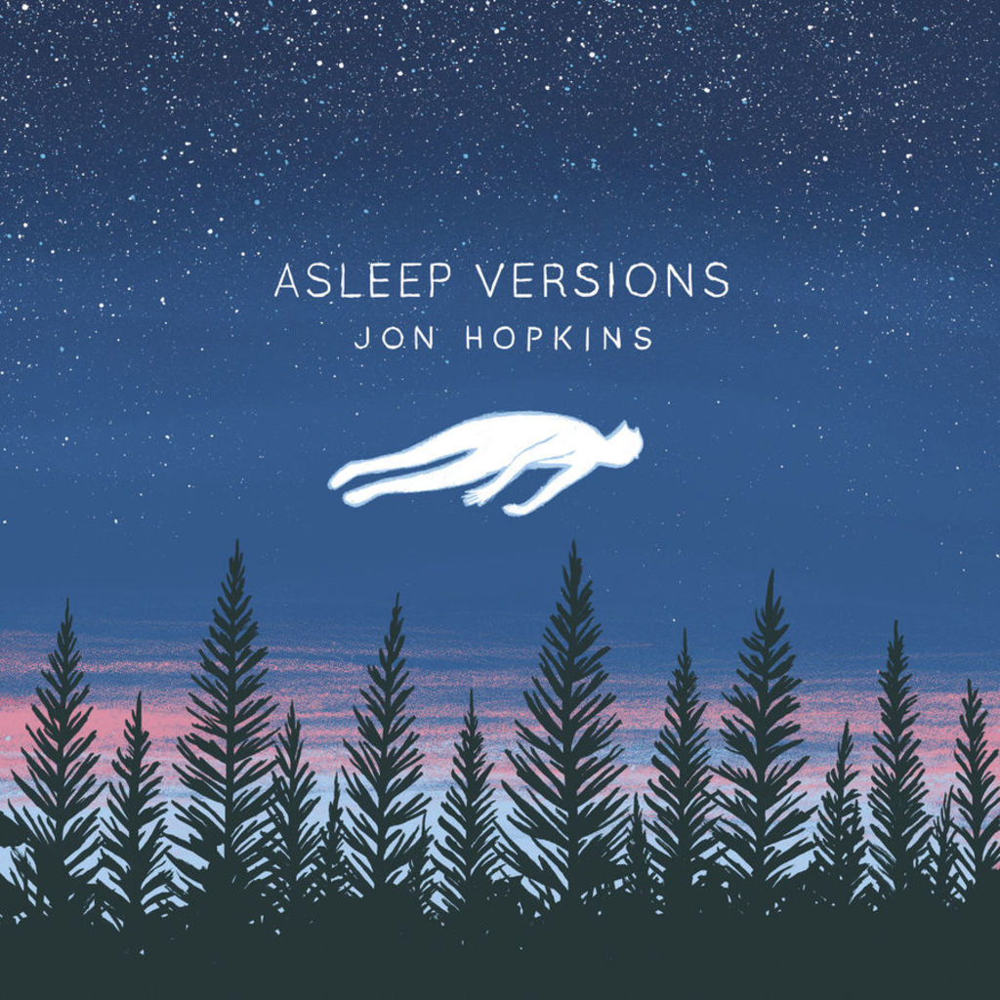

Jon Hopkins – Immunity asleep versions
Geplaatst door: Pipo op Augustus 21, 2014
Genre: dance
2CD, bevat het album "Immunity" plus de remix-ep "Asleep Versions" Vorig jaar bracht deze producer Immunity uit en sindsdien blijft ie ermee pielen, zanglijntje hier, remixje daar. Nu dus de asleep versions en beter kan het niet worden omschreven, droomachtige sfeervolle composities met vocale ondersteuning van King Creosote en Raphaelle Standell. Absoluut geschikt voor in het donker of in de slaapkamer. 4 tracks, en dat is genoeg om je te laten wegvoeren in de armen van Morpheus.
Absoluut geschikt voor in het donker of in de slaapkamer.
- Open eye signal
- Form by firelight (With Raphaelle S)
- Breathe this air
- Breathe this air (Asleep version)
- Open eye signal (Asleep version)
- Collider
- Abandon window
- Form by firelight
- Sun Harmonics
- Immunity